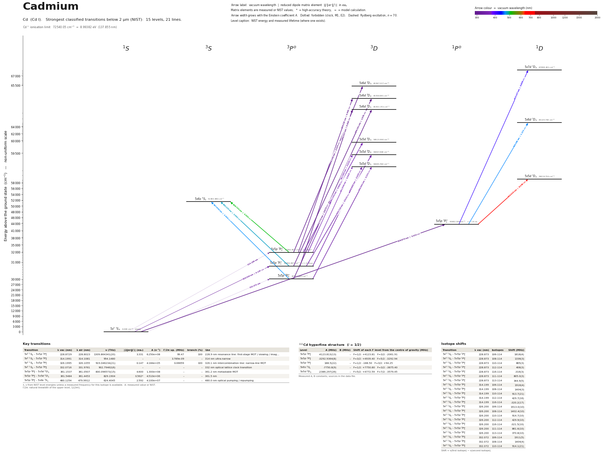

Cadmium energy level diagram
Energy levels and transitions of neutral cadmium (Cd I): the 21 strongest classified lines below 2 µm from the NIST Atomic Spectra Database and the 15 levels they connect, each line with its vacuum wavelength, frequency and, for 19 of them, the reduced dipole matrix element derived from the NIST transition rate. Measured lifetimes, transition rates, hyperfine constants and isotope shifts from the literature are included, each with its citation.
Hover a line or a level to isolate it, click to keep it selected. Scroll to zoom, drag to move.

Download: diagram (PDF) diagram (SVG) transitions (CSV) levels (CSV) source code

Key transitions of cadmium
| Transition | λ vac (nm) | λ air (nm) | ν (THz) | |⟨J‖er‖J′⟩| (ea₀) | A (s⁻¹) | Γ/2π up. (MHz) | branch (%) | Use |
|---|---|---|---|---|---|---|---|---|
| 5s2 1S0 – 5s5p 1P°1 | 228.8729 | 228.8023 | 1309.864341(20) | 3.331 | 6.250e+08 | 99.47 | 100 | 228.9 nm resonance line: first-stage MOT / slowing / imag… |
| 5s2 1S0 – 5s5p 3P°2 | 314.1991 | 314.1081 | 954.1480 | – | – | 3.789e-09 | – | 314 nm ultra-narrow |
| 5s2 1S0 – 5s5p 3P°1 | 326.1995 | 326.1055 | 919.046234(21) | 0.147 | 4.184e+05 | 0.06659 | 100 | 326.1 nm intercombination line: narrow-line MOT |
| 5s2 1S0 – 5s5p 3P°0 | 332.0716 | 331.9761 | 902.79462(6) | – | – | – | – | 332 nm optical lattice clock transition |
| 5s5p 3P°2 – 5s5d 3D3 | 361.1537 | 361.0507 | 830.096573(15) | 4.600 | 1.300e+08 | – | – | 361.2 nm metastable MOT |
| 5s5p 3P°2 – 5s5d 3D1 | 361.5484 | 361.4453 | 829.1904 | 0.562* | 4.510e+06 | – | – | 361.5 nm |
| 5s5p 3P°1 – 5s6s 3S1 | 480.1254 | 479.9912 | 624.4045 | 2.592 | 4.100e+07 | – | – | 480.0 nm optical pumping / repumping |
λ, ν from NIST level energies unless a measured frequency for this isotope is available. A: measured value or NIST. Γ/2π: natural linewidth of the upper level, 1/(2πτ).
111Cd hyperfine structure (I = 1/2)
| Level | A (MHz) | B (MHz) | Shift of each F level from the centre of gravity (MHz) |
|---|---|---|---|
| 5s5p 3P°1 | -4123.813(13) | – | F=1/2: +4123.81 F=3/2: -2061.91 |
| 5s5p 3P°2 | -3292.9364(8) | – | F=3/2: +4939.40 F=5/2: -3292.94 |
| 5s5p 1P°1 | 188.5(22) | – | F=1/2: -188.50 F=3/2: +94.25 |
| 5s6s 3S1 | -7750.8(9) | – | F=1/2: +7750.80 F=3/2: -3875.40 |
| 5s5d 3D3 | -2386.297(26) | – | F=5/2: +4772.59 F=7/2: -3579.45 |
Measured A, B constants; sources in the data file.
Isotope shifts
| Transition | λ vac (nm) | Isotopes | Shift (MHz) |
|---|---|---|---|
| 5s2 1S0 – 5s5p 1P°1 | 228.873 | 106-114 | 1818(4) |
| 5s2 1S0 – 5s5p 1P°1 | 228.873 | 108-114 | 1336(3) |
| 5s2 1S0 – 5s5p 1P°1 | 228.873 | 110-114 | 865(3) |
| 5s2 1S0 – 5s5p 1P°1 | 228.873 | 112-114 | 408(3) |
| 5s2 1S0 – 5s5p 1P°1 | 228.873 | 116-114 | -316(3) |
| 5s2 1S0 – 5s5p 1P°1 | 228.873 | 111-114 | 805.0(3) |
| 5s2 1S0 – 5s5p 1P°1 | 228.873 | 113-114 | 344.9(5) |
| 5s2 1S0 – 5s5p 3P°2 | 314.199 | 106-114 | 1916(4) |
| 5s2 1S0 – 5s5p 3P°2 | 314.199 | 108-114 | 1404(3) |
| 5s2 1S0 – 5s5p 3P°2 | 314.199 | 110-114 | 913.7(21) |
| 5s2 1S0 – 5s5p 3P°2 | 314.199 | 112-114 | 429.7(16) |
| 5s2 1S0 – 5s5p 3P°2 | 314.199 | 116-114 | -320.2(17) |
| 5s2 1S0 – 5s5p 3P°1 | 326.200 | 106-114 | 1913.0(10) |
| 5s2 1S0 – 5s5p 3P°1 | 326.200 | 108-114 | 1402.4(10) |
| 5s2 1S0 – 5s5p 3P°1 | 326.200 | 110-114 | 914.7(10) |
| 5s2 1S0 – 5s5p 3P°1 | 326.200 | 112-114 | 429.9(10) |
| 5s2 1S0 – 5s5p 3P°1 | 326.200 | 116-114 | -321.5(10) |
| 5s2 1S0 – 5s5p 3P°1 | 326.200 | 111-114 | 861.6(10) |
| 5s2 1S0 – 5s5p 3P°1 | 326.200 | 113-114 | 370.8(10) |
| 5s2 1S0 – 5s5p 3P°0 | 332.072 | 106-114 | 1911(5) |
| 5s2 1S0 – 5s5p 3P°0 | 332.072 | 108-114 | 1404(4) |
| 5s2 1S0 – 5s5p 3P°0 | 332.072 | 110-114 | 914.1(21) |
Shift = ν(first isotope) − ν(second isotope).
Listed Cd transitions below 2 µm
| Lower level | Upper level | λ vacuum (nm) | λ air (nm) | ν (THz) | Type | |⟨J‖er‖J′⟩| (ea₀) | A (s⁻¹) | Branching (%) | Source of matrix element / A |
|---|---|---|---|---|---|---|---|---|---|
| 5s2 1S0 | 5s5p 1P°1 | 228.8729 | 228.8023 | 1309.8643 | E1 | 3.331 measured | 6.250e+08 measured | 100 | Hofsaess, Padilla-Castillo, Wright, Kray, Thomas, Sartakov, Ohayon, Meijer, Truppe, 'High… |
| 5s5p 3P°0 | 5s6d 3D1 | 283.7734 | 283.6900 | 1056.4501 | E1 | 0.973 NIST | 2.800e+07 NIST | – | NIST ASD (accuracy D) |
| 5s5p 3P°1 | 5s6d 3D2 | 288.1612 | 288.0767 | 1040.3636 | E1 | 1.575 NIST | 4.200e+07 NIST | – | NIST ASD (accuracy D) |
| 5s5p 3P°1 | 5s6d 3D1 | 288.2070 | 288.1225 | 1040.1984 | E1 | 0.922 NIST | 2.400e+07 NIST | – | NIST ASD (accuracy D) |
| 5s5p 3P°2 | 5s6d 3D3 | 298.1490 | 298.0620 | 1005.5122 | E1 | 2.324 NIST | 5.900e+07 NIST | – | NIST ASD (accuracy D) |
| 5s5p 3P°2 | 5s6d 3D2 | 298.2232 | 298.1362 | 1005.2619 | E1 | 0.991 NIST | 1.500e+07 NIST | – | NIST ASD (accuracy D) |
| 5s2 1S0 | 5s5p 3P°2 | 314.1991 | 314.1081 | 954.1480 | M2 | – | – | – | – |
| 5s2 1S0 | 5s5p 3P°1 | 326.1995 | 326.1055 | 919.0462 | E1 (intercombination) | 0.147 measured | 4.184e+05 measured | 100 | Hofsaess, Padilla-Castillo, Wright, Kray, Thomas, Sartakov, Ohayon, Meijer, Truppe, 'High… |
| 5s2 1S0 | 5s5p 3P°0 | 332.0716 | 331.9761 | 902.7946 | clock | – | – | – | – |
| 5s5p 3P°0 | 5s5d 3D1 | 340.4629 | 340.3652 | 880.5438 | E1 | 2.121 NIST | 7.700e+07 NIST | – | NIST ASD (accuracy C) |
| 5s5p 3P°1 | 5s5d 3D2 | 346.7192 | 346.6200 | 864.6548 | E1 | 3.513 NIST | 1.200e+08 NIST | – | NIST ASD (accuracy D) |
| 5s5p 3P°1 | 5s5d 3D1 | 346.8647 | 346.7654 | 864.2921 | E1 | 2.035 NIST | 6.700e+07 NIST | – | NIST ASD (accuracy D) |
| 5s5p 3P°2 | 5s5d 3D3 | 361.1537 | 361.0507 | 830.0966 | E1 | 4.600 NIST | 1.300e+08 NIST | – | NIST ASD (accuracy D) |
| 5s5p 3P°2 | 5s5d 3D2 | 361.3903 | 361.2872 | 829.5532 | E1 | 2.019 NIST | 3.500e+07 NIST | – | NIST ASD (accuracy D) |
| 5s5p 3P°2 | 5s5d 3D1 | 361.5484 | 361.4453 | 829.1904 | E1 | 0.562 theory | 4.510e+06 theory | – | Robert, Manzoor, Chiarotti, Poli, 'Multipole transition amplitudes and radiative decay ra… |
| 5s5p 1P°1 | 5s7d 1D2 | 414.1470 | 414.0302 | 723.8794 | E1 | 0.908 NIST | 4.700e+06 NIST | – | NIST ASD (accuracy D) |
| 5s5p 1P°1 | 5s6d 1D2 | 466.3657 | 466.2352 | 642.8270 | E1 | 1.173 NIST | 5.500e+06 NIST | – | NIST ASD (accuracy C) |
| 5s5p 3P°0 | 5s6s 3S1 | 467.9459 | 467.8150 | 640.6562 | E1 | 1.404 NIST | 1.300e+07 NIST | – | NIST ASD (accuracy C) |
| 5s5p 3P°1 | 5s6s 3S1 | 480.1254 | 479.9912 | 624.4045 | E1 | 2.592 NIST | 4.100e+07 NIST | – | NIST ASD (accuracy C) |
| 5s5p 3P°2 | 5s6s 3S1 | 508.7239 | 508.5821 | 589.3029 | E1 | 3.304 NIST | 5.600e+07 NIST | – | NIST ASD (accuracy C) |
| 5s5p 1P°1 | 5s5d 1D2 | 644.0249 | 643.8469 | 465.4982 | E1 | 6.236 NIST | 5.900e+07 NIST | – | NIST ASD (accuracy C) |
Reduced dipole matrix elements follow the convention A = ω³|d|²/(3πε₀ħc³(2J′+1)), with J′ the upper level. Tags show where a number comes from: measured, NIST compilation, high-accuracy theory, or a model calculation.
Cd energy levels
Cd⁺ ionisation limit 72540.05 cm⁻¹ = 8.99382 eV (137.855 nm)
Sources
- Gibble, 'Laser-cooling Cadmium Bosons and Fermions with Near Ultraviolet Triplet Excitati…
- Hofsaess, Padilla-Castillo, Wright, Kray, Thomas, Sartakov, Ohayon, Meijer, Truppe, 'High…
- NIST ASD
- NIST ASD level energies
- Robert, Manzoor, Chiarotti, Poli, 'Multipole transition amplitudes and radiative decay ra…
- Schelfhout & McFerran, Phys. Rev. A 105, 022805 (2022), arXiv:2112.05987
Conventions. (1) Isotope-shift keys 'a-b' mean nu(a) - nu(b); all Cd shifts are relative to 114Cd as printed. Fermion shifts are hyperfine centres of gravity. (2) Hyperfine entries carry the measured interval (interval_MHz) and a derived A_MHz; I = 1/2 so B = 0. (3) Fields beyond SCHEMA.md: natural_linewidth_*, interval_MHz, photoionization, magic_wavelength_nm, bbr_shift_Hz, type 'M2', top-level 'rydberg' (ionization limit) and 'conflicts'. (4) rme_J_ea0 values are derived here from measured lifetimes with the schema convention (branching to the ground state taken as 1); they are not printed in the sources. (5) The clock (332 nm) and 314 nm isotope shifts are King-plot derived values of Ohayon et al., not direct measurements.
Atoms with measured data
- Lithium-632 levels, 85 lines
- Lithium-732 levels, 85 lines
- Beryllium-915 levels, 24 lines
- Sodium-2336 levels, 106 lines
- Magnesium-2418 levels, 61 lines
- Magnesium-2518 levels, 61 lines
- Potassium-3934 levels, 84 lines
- Potassium-4034 levels, 84 lines
- Potassium-4134 levels, 84 lines
- Calcium-4035 levels, 61 lines
- Calcium-4335 levels, 61 lines
- Rubidium-8536 levels, 94 lines
- Rubidium-8736 levels, 94 lines
- Strontium-8740 levels, 70 lines
- Strontium-8840 levels, 70 lines
- Caesium-13331 levels, 79 lines
- Barium-13744 levels, 89 lines
- Barium-13844 levels, 89 lines
- Dysprosium-16339 levels, 55 lines
- Dysprosium-16439 levels, 55 lines
- Ytterbium-17118 levels, 26 lines
- Ytterbium-17418 levels, 26 lines